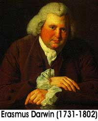

![[David Blaine]](091203-blaine.jpeg)
Empezaré el comentario de esta semana con algunas opiniones acerca de la proeza actual del mago David Blaine: la supervivencia durante 44 días en una caja de plástico transparente suspendida de una grúa, en Londres. No entraré en los aspectos técnicos del asunto, sino que quiero comentar sobre la extraña actitud de los ciudadanos del Reino Unido que parecen estar resueltos a molestar a Blaine tanto como puedan.
Es un artista, un entretenedor, y obviamente es exitoso. Ha negado repetidamente ser el poseedor de cualquier poder “psíquico”. Permite que la gente proponga teorías y se maraville de sus hazañas, y se llenan docenas de sitios y columnas de periódicos con extrañas ideas de cómo puede estar realizando estas cosas. Déjenme aclarar algo: nada de esto es un misterio para los magos profesionales. Sabemos cómo se hacen estas cosas, y las miramos con interés, aunque hay desacuerdo entre nosotros en nuestras opiniones sobre lo que esto aporta, o no, a la disciplina.
En febrero de 1956, reproduje la prueba de supervivencia que Harry Houdini realizó en 1926 en un ataúd sellado de metal de 56cm x 56cm x 2,06m: de hecho, un duplicado exacto de la caja original. Permanecí allí durante una hora y 44 minutos, que se transmitieron en vivo en el programa “Today” de la NBC. Dos años después, en Londres, hice la misma prueba, esta vez durante dos horas y tres minutos. La reacción que recibí sobre ambas pruebas fue satisfactoria y avanzó mi carrera, pero también hubo comentarios de que sólo estaba imitando a Houdini, y me enojé ante tal impresión. Desde entonces, ya estuviera yo colgado sobre una calle atrapado en un chaleco de fuerza, o encerrado en una gigantesca lata de leche en un escenario, hice lo que pude para evitar la comparación casi inescapable (¡chiste!).
De manera parecida, a Blaine se lo compara con los estilitas del pasado, y los muchos faquires enterrados vivos. ¿Y qué? A los violinistas los comparan con Perlman, y a los boxeadores con Alí. Puede ser un cumplido, si se decide verlo de ese modo. En lo que a sus actividades se refiere, está haciendo un buen trabajo. Déjenlo en paz.
Lo que temo es que lo estén manipulando quienes lo manejan, atraídos por el dinero que atraen estos asuntos, y que no se preocupan por el daño que puede hacerse a sí mismo. Cuando la semana pasada intenté enviarle un mensaje de 30 palabras por correo electrónico, como lo he hecho antes, esta vez fue interceptado y bloqueado; la razón que se me dio fue que era “demasiado largo”. Sí, claro. Cuando un artista deja de comunicarse con el mundo real (especialmente con miembros de su propia profesión), lo están manipulando, no manejando su carrera.
Los yahoos de Londres, que basan su idea del entretenimiento en cómo se compartan en los partidos de fútbol, están acribillando la caja de Blaine con huevos, frutas podridas, balas de pintura y botellas. Algunos golfistas están intentando golpearlo con pelotas de golf lanzadas desde el puente cercano (las que no sólo podrían lastimar a David, sino lastimar fácilmente (o matar) a otros espectadores. Un patán de 34 años de Brixton (34 años de calendario, pero difícilmente de inteligencia) estaba bombardeando la caja “para quebrarlo y hacerlo bajar”. Esa es una gran ambición, expresada claramente por un gigante intelectual. ¿Destruye el acto, quizá lastimándolo a él, para ser admirado por tus amigos?
¿De donde viene este impulso vandálico? ¿Esta gente se ha fijado metas de destrucción y daños? ¿Cómo pueden defender sus acciones? Hay que admitir que David Blaine emprendió esta empresa con los ojos abiertos, pero no creo, me parece, que se haya imaginado el odio y la hostilidad que algunos londinenses le han brindado. Es malintencionado, es descortés, es incivilizado.
Adelante, David. Tú estás en lo correcto; ellos no.
El lector Harrison Bolter de San Diego quiere recomendar a los lectores de esta columna que se informen sobre una organización llamada American United for Separation of Church and State (“Estadounidenses Unidos por la Separación de la Iglesia y el Estado”) en http://www.au.org. Dice Harrison que
… conducido por un ministro lego, Barry Lynn, este grupo ha estado luchando para mantener separadas la iglesia y el estado por ya algunos años, y ha atacado a toda clase de fanáticos religiosos como Moore, Jerry Falwell, Pat Robertson y muchos otros neonazis (no piense que tengo prejuicios o algo así). Publican un fantástico periódico llamado Church and State. Bueno, fin del anuncio publicitario.
El lector Mark D. Proulx, quien se describe como “Un bright entusiasta”, opina:
Estaba leyendo el último comentario en su página web, titulado “Benveniste y Josephson sobre abandonar la ciencia” y pensé que sería apropiado mencionar algo acerca de tener individuos “sin educación superior” en el equipo de investigadores. Además de la claque habitual que circunda a los que se mueven en los círculos académicos, está el hecho de que esos individuos se apoyan de manera altruista los unos a los otros debido a la frágil naturaleza de su “trabajo”. Deben apoyarse los unos a los otros por el bien de toda la industria (como lo hizo Gerald Ford indultando al presidente Nixon para salvar la institución de la presidencia) a pesar del costo personal, para salvar su industria.
Trabajé en la industria de la fabricación de dispositivos médicos por unos doce años, y estoy profundamente consciente de las reglas de la FDA 1 que requieren que tengamos una persona totalmente separada de los grupos que participan en la prueba, el desarrollo, la calificación, etc., para poder tener una opinión objetiva, sin prejuicios asociados con el proyecto o las personas involucradas en él. De hecho, ya que he visto de primera mano los beneficios de utilizar opiniones externas de los usuarios finales que no son, ni por mucho, tan capaces técnicamente como nuestros ingenieros, no puedo entender cómo algún proceso científico puede no involucrar una opinión completamente carente de prejuicios, como la de una persona “sin educación superior” (a propósito… ¡me encanta la frase!). Sin los comentarios de un usuario final o un tercero sin prejuicios, nuestros ingenieros estarían trabajando en el vacío y casi nunca desarrollarían dispositivos útiles para el público. ¡Gracias a Dios por los “no educados”!
No digo que esta práctica sea perfecta; sin embargo, mi trabajo resiste la crítica. Y, eh, no retrocedo ante la crítica. Le doy la bienvenida.
Lo que hallo más interesante son los extremos a los que llega la gente para apoyar su sistema de creencias, ya sea científico, religioso o cualquier otro. Estoy completamente de acuerdo con que el método científico es el mejor para la afirmación competente de una creencia; sin embargo, tanto “ciencia” como “religión” aceptan demasiadas cosas por la fe sin intentar realizar afirmaciones en lo absoluto. Tengo poca fe en ambas, simplemente porque en el corazón de ellas siempre hay una persona (con sus propios planes) y una industria entera de individuios con egos tan frágiles que se resquebrajan al examinarlos de cerca. A este fin, en mi humilde opinión y para la angustia de ambos grupos, la ciencia y la religión son las dos caras de la misma moneda falsa…
Como tantas veces dijo con tanta elocuencia Dennis Miller: “Es sólo mi opinión: puedo estar equivocado”.
Mark, la ciencia difiere de la religión en muchos aspectos, el más importante de los cuales es que la ciencia puede revertirse a si misma, puede estar equivocada y aún así sobrevivir incluso más fuerte; la religión no puede hacer tal eso. Cualquier “aceptación por la fe” que la ciencia realice debe ser validada y aceptada antes de ser utilizada, y nadie en la ciencia opera como individuo, sino que se basa en la estructura y los cimientos de los millones que han trabajado antes como materiales de construcción. Las decisiones, los hallazgos, las afirmaciones realizados por un científico deben ser reafirmados; muchas nociones muy hermosas de la ciencia “se resquebrajan al examinarlos de cerca”, un fenómeno que jamás se ha visto en la religión.
Estoy en profundo desacuerdo con su conclusión, pero gracias por expresar sus opiniones en la materia.
Un aparte: Es usted un Bright, pero ¿a quién le agradece?
![[Círculos en los cultivos]](091203-cropcircle.jpeg)
Para obtener consejos de cómo hacer sus propios círculos en los cultivos, vaya a http://www.circlemakers.org/exhibit_a.html.
La lectora Diana Thoren informa:
Hoy en [el programa de Montel Williams] una pareja le dijo a Sylvia [Browne] que su hija había muerto hacía unos cinco años. (En la foto se veía como de 17 años.) Querían saber de qué había muerto. Sylvia anunció: “Le dispararon”. La pareja le puso la más perfecta cara de “Estás diciendo una sarta de sandeces”, y luego dijeron juntos: “Se desmayó en su habitación”. Sylvia repitió: “Le dispararon”. El padre dijo “En la autopsia…” y Silvia lo interrumpió diciendo: “No me importa qué decía la autopsia: le dispararon”. La madre dijo: “No había fragmentos de bala, ningún signo de un disparo, simplemente se desplomó”.
Montel salió al rescate de Sylvia (de nuevo) y dijo: “¿Ella hacía deportes? Porque últimamente ha habido chicos que vuelven a casa luego de que los golpean en el pecho y han muerto, y no tenían ninguna lastimadura”. La pareja giró sus cabezas: “No”. Cuando Montel y Sylvia terminaron de retractarse, se habían puesto de acuerdo en “algo en el pecho o en el corazón”. Y eso fue todo.
¿Cómo *censurado* sigue esta mujer saliéndose con la suya?
Diana, Williams es una celebridad, con mucha influencia. También es muy instruido e inteligente. Pero su único interés es atraer y conservar espectadores, de modo que senillamente no le importa. Los enormes gazapos que Browne ha cometido en su show, tales como éste, de seguro le muestran a él y a sus empleados que ella se alimenta de la pena y vulnerabilidad que se le presenta allí, y Williams está obviamente deseoso de ser parte de ese cruel proceso. Pero esto son los grandes negocios; las víctimas deben superar a los que prosperan con tal fraude. Repito: Montel Williams lo sabe, sólo que le importa un bledo.
La semana pasada olvidamos mencionar que el monumento a los Diez Mandamientos que Alabama tiene colgando en torno a su cuello colectivo fue pagado por nada menos que el doctor James Kennedy de los Ministerios de Coral Ridge, aquí en Florida. Este ridículo predicador recolectó miles de dólares de sus fanáticos para ayduar a la causa del Juez. Con la cobertura de la oscuridad, mientras la monstruosa roca era colada subrepticiamente en el edificio municipal, el equipo de Kennedy llegó a grabar el delito ¡y les vendió la videocinta a sus partidarios!
No pierda la oportunidad de leer el material en http://www.spaink.net/fishman/home.html porque puede desaparecer, sabiendo cuánto dinero invertirá la Iglesia de la Cienciología en suprimir ese material…
![[Karen Boesen]](091203-Karen.jpeg)
Estaba mal informado sobre la sociedad danesa entre Karen Boesen y Henry Weingarten, el “astrólogo financiero” que mencioné la semana pasada. Aparentemente Karen tuvo una revelación divina de que Henry estaba sacando ventaja de algunos de los activos de los clientes de la asociación astrológica de ella, y cortó el contacto con él hace unos pocos años. ¿Quizá ella no obtuvo el horóscopo de él antes de incorporarlo a la organización? ¿O él mintió sobre su fecha de cumpleaños para confundirla? La astrología es, después de todo, una ciencia extraña en la cual la tasa de éxitos es indistinguible de lo que podría esperarse del azar… Pero la revista Forbes, aparentemente desconociendo el registro de desempeño de Henry, sigue citándolo como “editor de Wall Street Next Week”. Ah, caray. Los simples mortales nunca entenderemos las complejidades de llevar adelante un negocio guiándose por las posiciones de los planetas. ¡Ey, el presidente Reagan lo intentó…! Un corresponsal danés nos informa que el próximo congreso del señor Weingarten en Nueva York tendrá por tema “Descubra cómo algunos de los mejores astrólogos financieros del mundo piensan, aconsejan y manejan su dinero”. Tal como agrega nuestro informante: “Sí, ya descubrimos cómo lo hacen…”

La cita siguiente, que recibí de Mike Conefrey de Virginia, pude encontrarse en The Lunar Men (“Los hombres lunares”), de Jenny Unglow. Afirmando que la ignorancia y la credulidad siempre han marchado juntos y han “confundido y esclavizado a la humanidad”, el doctor Erasmus Darwin (abuelo del más recordado Charles) escribió en “Zoonomía IV” que la filosofía, o la ciencia experimental,
… en todas las épocas se ha opuesto [al progreso de la ignorancia y la credulidad] y a aflojar los grilletes que ellas han impuesto; los filósofos han sido llamados incrédulos por ello: ¿incrédulos de qué? ¿De las ficciones de la fantasía, de la brujería, duendes, apariciones, vampiros, hadas; de la influencia de las estrellas sobre las acciones humanas, los milagros producidos por los huesos de los santos, el vuelo de pájaros de mal agüero, las predicciones de los huesos de animales moribundos, los elucidadores de sueños, las adivinas, los magos, los profetas modernos, la necromancia, la quiromancia, el magnetismo animal, los tractores metálicos, con las interminables variantes de disparates? De esto descreen y se burlan, pero han inclinado sus cabezas canas ante la Verdad y la Naturaleza…
Los lectores sugieren con frecuencia que yo apruebe métodos bastante drásticos de manejar a los distribuidores de sinsentido, y por lo general expreso mi desacuerdo. Dos ejemplos actuales:
Otro mandamiento divino, éste de Éxodo 22:18, declara: “No dejes vivir a ninguna hechicera”. No, no apoyo esto, pero apoyaría lo siguiente: “No dejes vivir cómoda a ninguna hechicera”. ¡Hola, Sylvia!
El físico Peter Hagelstein, hablando recientemente ante los 150 científicos que asistieron a la reciente 10ª Conferencia Internacional sobre la Fusión Fría en Cambridge, Massachusetts, le dijo a la concurrencia: “Bien, aquí estamos. Mucha gente de la comunidad científica cree que deberían fusilarnos”. ¡No, no, no! Yo creo que deberían ignorarlos. Eso es incluso peor…
![[Universidad de Lund]](091203-hypnotic.jpeg)
Muchos, muchos lectores me enviaron artículos sobre la Universidad de Lund en Suecia, uno de las sedes educativas más antiguas de Escandinavia, la cual ha anunciado que dará un salto cuántico hacia la ridiculez al convocar al primer “profesor de parapsicología, hipnología y clarividencia” de Europa del norte. Demonios, ¿por qué no pensamos en ello? Unos 30 candidatos, incluyendo a un autodenominado médium de la India y un estadounidense llamado Heaven Lord [Dios del Cielo] se postularon para el puesto, financiado por medio de una donación. El cargo, dice el periódico sueco Aftonbladet, debería denominarse “Profesor Fantasma”.
Será nombrado solemne y oficialmente por el Decano de la Universidad de Lund Goran Bexell, y se espera que empiece a trabajar en 2004. El Decano puede tener que ocultar una o dos sonrisas, pero se las arreglará, cuando reflexione sobre el interés que causará tener una pseudociencia tan atractiva en la nómina de la Universidad de Lund. El éxito de la universidad depende de las inscripciones, e incluso unos pocos estudiantes atraídos por esta charlatanería producirá una diferencia notable en los ingresos.
Se dice que “la hipnología es la ciencia de los fenómenos del sueño y de la hipnosis”. Nuestro buen amigo Sven Ove Hansson, profesor de filosfía en el Instituto Real de Tecnología de Estocolmo respondió a las preguntas de los medios diciendo: “Verificar la existencia de los fenómenos paranormales no parece ser un campo promisorio de la ciencia”. El doctor Hansson, autor de “Förklarade Mysterier”, un libro de 1986 que trata de las afirmaciones paranormales, fue más amable de lo que yo hubiera sido. Nótese también que la Universidad de Utrecht de los Países Bajos y la Universidad de Edinburgo en Escocia también tienen cátedras en parapsicología. No tengo problema con ello, siempre y cuando quienes ocupen las cátedras estén bien provistos de cerebro.
Desde Nueva Zelandia, el lector Sharath Chandra:
Soy un estudiante de ingeniería de primer año aquí en la Universidad de Auckland. Hace cerca de un mes, me topé con un programa de TV llamado “The Profilers” en TV Dos (sólo tenemos cuatro canales de TV de aire). Decía ser un programa neocelandés que juntó un panel de cuatro “perfilistas”, quienes interrogarían a una persona y luego le dirían qué había pasado en su pasado, ¡aunque no se me ocurre para qué podría servir eso! El panel consistía de un clarividente, un astrólogo, un numerólogo, y otras dos personas que se llamaban “algo-logistas” (los nombres eran raros).
El programa transcurrió así: el conductor convocaba a personas (aparentemente genuinas) que hubieran tenido un incidente significativo que cambiara sus vidas. Los perfilistas le harían un par de preguntas cada uno y presentarían lo que pensaran que era el verdadero incidente. Y tenían un zumbador muy bonito que sonaba cuando acertaban (lo que sucedía siempre); ¡hasta me corría un cosquilleo por la espina dorsal cuando lo escuchaba! Sí, así sucedió.
Pero por lo que parece, ¡los cuatro “perfilistas” tuvieron una entrevista antes del programa con cada uno de los “clientes”! Mire qué sorpresa, ¡justo cuando uno se preguntaba si sería cierto! El propio conductor no era un lego, ¡era un “experto” en escritura manuscrita! De modo que cuando los perfilistas estaban en sus cubículos torturando sus cerebros para obtener una solución, este sujeto hacía sentar al cliente con él y le pedía que escribiera algo y luego él le diría qué clase de persona era.
Y había un sujeto que analizaba los nombres, ¡que nos dijo que todos los Paul eran mentirosos! Pensé que estaba bromeando pero realmente escribió “Paul” en un pizarrón y procedió a explicar por qué los Paul tienden a ser mentirosos. ¡Hace que uno se pregunte qué les impide mentir sobre su nombre!
Pensé que era un programa único, ya que TV Dos tiende a hacer cosas excéntricas de vez en cuando. Pero cuando escuché que el conductor decía “Vuelva a vernos la próxima semana, cuando volveremos con más magia de los perfilistas”, sabía que tenía que hacer algo. Le envié un mensaje electrónico a la gente de TV Dos reprendiéndolos severamente por difusión irresponsable. Era la primera vez que hacía una cosa así, así que hice mi mejor esfuerzo, y en el momento en que pulsé “Enviar”, me sentía realmente orgulloso de mí mismo.
“The profilers” nunca tuvo un segundo episodio. ¡Probablemente recibieron más correo agresivo del que pudieron leer!
Sharath, es muy posible que esto fuera lo que se conoce como programa “piloto” o “ejemplo”, realizado con la esperanza de que pudiera resultar en un programa seriado. Con frecuencia se muestran tales programas como “relleno” y/o para pagar sus costos de producción, cuando nadie muestra ningún interés. Sin embargo, ha habido series similares en otros países que han tenido seis o siete programas antes de expirar.
El sitio “World News” de la APS de Bob Park presentó este artículo:
RULETA POLIGRÁFICA: EL D.E. HA DOMINADO “EL JUEGO DE LAS EXPECTATIVAS”
Un estudio de dos años de la Academia Nacional de Ciencias, “El polígrafo y la detección de mentiras”, mostró que las pruebas de polígrafo son menos que inútiles (WN 18 Abr 03). Uno podría esperar, al menos como un gesto, alguna disminución en las pruebas realizadas por el Departamento de Energía. En lugar de ello, el D.E. reinstauró descaradamente la política anterior, que sometería a cerca de 20.000 empleados a la difamación aleatoria. Hubo una protesta inmediata por parte de los empleados, y el senador republicano de Nuevo México Pete Dominici convocó a una audiencia de supervisión del Comité de Energía para el jueves, en la que el D.E. anunció que apenas unos 4.500 empleados con calificación de seguridad “ultrasecreto” serán sometidos a que sus carreras sean arruinadas por la ruleta rusa poligráfica. Fue una victoria para el senador Domenici, quien elogió al D.E. por su iluminada política. Pero no hay nada en el estudio de la ANC que diga que el polígrafo funciona mejor si uno tiene calificación de seguridad “ultrasecreto”.
Recordarán que un tal Steven J. Hatfill atrajo las sospechas del FBI en el asunto del ántrax 2, y perdió su calificación de seguridad luego de que una prueba poligráfica realizada por la CIA arrojara resultados “inconcluyentes”. Las fuentes que conocían el registro laboral de Hatfill dijeron que los examinadores polográficos de la CIA lo examinaron como parte de su postulación para obtener una calificación de seguridad de ultrasecreto. Informaron resultados “inconcluyentes” sobre las preguntas referidas a sus años de residencia y sus relaciones en Rhodesia y Sudáfrica, y como resultado, se le suspendió su calificación de seguridad normal. Estas agencias insisten en usar esta tecnología primitiva, sin efecto y chapucera, y parece que nadie puede convencerlos de lo contrario.
El FBI, a lo largo de varios años y con un gran costo, investigó a un oficial de la CIA del que sospechaban su traición, y arreglaron una situación en la cual, sin despertar sus sospechas, fue sometido a una prueba poligráfica. Pasó la prueba tan bien que el FBI se convenció más de que era culpable… ¡porque fue muy competente al pasar la prueba! Luego de ello, intentaron incriminarlo por medio de una falsa oferta soviética de desertar. Ya que informó inmediatamente de este intento a sus superiores, el FBI se convenció absolutamente de su ingenio; informar una oferta de deserción era un método tan ingenioso, decidieron, que eso significaba que era un super-espía. Lo único que los condujo a abandonar ese rumbo fue que el que escucharan una grabación secreta en cinta, seguros de que la voz que estaban oyendo era el operador de la CIA, y que un valiente agente sugiriera que en realidad sonaba más como si fuera la voz de Robert P. Hanssen, un agente de los altos niveles del FBI, y probablemente el traidor estadounidense más destacado de la historia moderna. Era él.
¿Cuál es la lección, alumnos? Si el sujeto falla la prueba poligráfica, miente. Si pasa, de veras miente. ¿Entendieron?
[Aquí Randi cita el espantoso inglés escupido por un programa de traducción automática traduciendo un mensaje en alemán de alguien que afirma tener pruebas definitivas sobre los OVNIs. El resultado es muy divertido en inglés pero tiene poco sentido traducirlo aquí. Puede leer este disparatado resultado de la informática en http://www.randi.org/jr/091203.html.]
El lector Dan Edman, de Estocolmo, nos envía lo siguiente:
Probablemente reciben todas las semanas cientos de avisos sobre nuevos sitios de charlatanes como éste, pero este debe ser uno de los sitios más tontos, extraños e inconsistentes eun mucho tiempo. Les cuento desde el principio:
Una tarde soleada de fin de semana salí a pasear en bicicleta por la ciudad de Estocolmo. En mi camino a la tienda discográfica que quería visitar, me crucé con un poster inquietante (pero también intrigante). Tenía al menos 1,5 x 2 metros de tamaño, y cubría totalmente una pared vecina a un negocio de un acupuntor y quiropráctico. ¿El texto? ¡”Acupuntura musical”! ¡Sí, damas y cabuleros! 3 No hace falta que su médico brujo local le clave agujas y alfileres en las partes equivocadas de su cuerpo. (¿Qué mejor forma de localizar su billetera?) Ahora hay una forma totalmente indolora, gracias al señor Michael B. Johnsson y su colección de CDs caros y completamente insufribles de escuchar, llenos de las mismas paparruchas orientales de la nueva era y un reiterativo canto de pájaros “para generar calma”. ¡De veras, no bromeo! Le sugiero enfáticamente que vaya a http://www.musicacupunture.com y compruebe uno de los sitios de charlatanería curativa más divertidos en muuuuucho tiempo. ¿Hace falta que diga cuánto abundan las palabras de moda como “frecuencias”, “vibraciones”, “energías”, “meridianos”, etc.? Ey, incluso hay MP3s para bajar. Pero lo que me hizo desternillar de risa fueron los CDs de Feng Shui. Pensé que FS era sobre cosas tales como no tener los libros en el baño para que su sabiduría no se fuera por los caños o insensateces por el estilo. Parece que no hay que redecorar su sala de estar al estilo asiático gastando cinco mil dólares, sólo compre el CD por U$S 59 y todas esas malignas vibraciones negativas que siguen interfiriendo con el control remoto de su televisor se retorcerán y sufrirán una muerte horrible. La edición “Super Feng Shui” podría ser un perfecto regalo para su peor enemigo. El sitio se vanagloria de que “Este CD equivale a cinco millones de horas de acupuntura”. ¡Ay! ¡Eso debe doler!
Finalmente, muchas felicitaciones por el sorprendente trabajo de la JREF. Me faltan las palabras para expresarle cuán educativo, con frecuencia entretenido, y a veces terrorífico, es leer los comentarios cada semana.
Rich Karpen nos cuenta de su entrada como adulto en el mundo real:
El artículo de Ian MacMillan de la columna del 29 de agosto sobre el movimiento perpetuo me hizo recordar mi propia participación en este campo, hace casi 40 años, cuando estaba en cuarto grado. Había leído un libro sobre electricidad básica que señalaba entre otras cosas que un motor eléctrico y un generador eléctrico son esencialmente lo mismo. Si uno ingresa energía eléctrica la armadura gira y se tiene un motor; si se gira la carcasa físicamente sale energía eléctrica y uno tiene un generador.
Esto me puso a pensar: ¿qué pasaría si se unieran las carcasas de tales dispositivos, se iniciara el giro del primero con una batería, y luego se usara la electricidad producida por el segundo para alimentar el primero y después se desconectara la batería? ¿No seguiría girando?
Dibujé un diagrama de mi dispositivo, el cual llamé “Motor autoalimentado”, y se lo mostré a mi padre. Él dijo que parecía una máquina de Movimiento Perpetuo, una expresión que no había oído antes. Diré en su favor que mi papá me alentó a que fuera y tratara de construir una.
Yo estaba entusiasmado. Había hecho un gran descubrimiento. ¿Por qué a nadie se le había ocurrido esto antes? Me imaginé toda la energía gratuita que se produciría para el bien de la humanidad, y cómo aparecería yo en televisión, aceptando con modestia el crédito por ello.
Convoqué a mi amigo Bruce como compañero y le hice jurar el secreto. Unimos nuestros magros recursos, fuimos hasta la ferretería y compramos dos motorcitos eléctricos. Tomé cable aislado y un pulsador de encendido de mi juego de trenes. Unimos los motores a un tablero y unimos las carcasas con un pedazo corto de tubo de plástico. Luego conecté unidas las terminales de ambos motores y conecté las terminales del primer motor al interruptor y a una batería de 1,5 voltios, de las enormes que había en aquél entonces, más o menos del tamaño de un vaso de agua con las dos terminales arriba. Inspiré profundamente, pulsé y retuve el botón y… no pasó nada.
Ahora que lo pienso, supongo que el problema en ese momento era que había conectado, básicamente, los motores en paralelo a la batería, y, o bien la batería no tenía potencia suficiente para ambos motores, o estaban tratando de impulsarse en direcciones opuestas. En mi juvenil entusiasmo, sin embargo, pasé esto por alto. Mi primera pregunta fue: ¿Por qué el generador no alimenta el motor? Teoricé que quizá no estaba produciendo potencia suficiente.
El libro de electricidad también explicaba el principio del transformador, así que intenté incrementar el voltaje de la salida del generador enrollando bobinas de alambre de distinto tamaño en torno a los lados opuestos de un aro de acero que había arrancado de un giroscopio. No sirvió de nada, lo que no es de extrañar.
Le conté a mi padre sobre mi fracaso. Era obvio que yo había tenido otros problemas técnicos, pero en ese momento me explicó la fricción. “¡No, no es eso!”, grité yo, y me fui a mi habitación.
Más tarde, busqué “movimiento perpetuo” en mi enciclopedia infantil, la que me reveló que es una idea vieja, que mucha gente ha intentado construir una máquina así pero los científicos dicen que es imposible, y se extendía sobre el problema de la fricción. Años más tarde, leí en mi libro de ciencias del secundario una discusión sobre precisamente esa situación: qué pasa si se intenta hacer que un motor impulse un generador para alimentar el motor.
A propósito, recuerdo que el artículo en esa enciclopedia infantil acerca de los fantasmas explicaba que tienden a ser el resultado de ilusiones ópticas o bien el resultado de imaginaciones hiperactivas (no se ocupaba de las alucinaciones), y que los verdaderos fantasmas no existen; más o menos la posición de usted sobre ese tema.
Ojalá hubiera sabido en ese momento con cuánta facilidad Tom Bearden obtuvo una patente para una máquina de movimiento perpetuo que no funciona… eso es lo que yo tenía. Podría haber ganado una fortuna. Hmm, todavía podría, ¿no es verdad?
De ningún modo. ¡Yo lo haría primero!
Hablando en serio, ojalá todos los chicos pudieran tener la oportunidad de poner a prueba sus ideas. Cuando joven, construí bobinas de Tesla con tubos de correo y cajas de Quaker, radios de onda corta con cristales de piedra de galena y una antena de 30 metros; incluso un aparato primitivo de televisión… ¡usando un disco Nipkow de cartón! La bobina de Tesla casi me frió vivo, y la transmisión de televisión de una habitación a otra producía borrosos rectángulos anaranjados con los dígitos transmitidos, ligeramente más oscuros e incluso más borrosos, sobreimpresos sobre ellos. Esas fueron grandes aventuras, y mi amigo Gary Haines y yo nos sentíamos como los Tom Swift de Toronto, Canadá.
No me perdería un momento de ello. Bueno, tal vez a excepción de la vez que conectamos la bobina de arranque de un Ford al punto de orina favorito de los perros locales. No teníamos idea de que un perro podría cruzar sus piernas traseras en el aire de esa forma…
Otra atribución proporcionada por un lector: la expresión “ante Dios” (“under God”) proviene del Discurso de Gettysburg de Lincoln:
“…para que resolvamos aquí que los muertos no han muerto en vano, para que la nación presencie ante Dios un nuevo nacimiento de la libertad y para que el gobierno del pueblo, por el pueblo y para el pueblo, no desaparezca de esta tierra”.
Un tal Montague Keen se ha estado divirtiendo injuriándome en la Internet, y los remito a http://www.victorzammit.com/articles/montague.html para que vean una muestra. Den una mirada, y quizá puedan darme algunas sugerencias de cómo manejar esto. Recibo tantas preguntas sobre la diatriba de Keen que tendré que dedicar algo de mi valioso tiempo tratando de iluminarlo en relación con este asunto. Quizá la próxima semana verán una discusión detallada de este revuelo. ¡Sigan con nosotros!

- 1
-
Food and Drug Administration, la agencia federal estadounidense que regula la salida de nuevos productos relacionados con los alimentos y la salud. [N. del T.]
- 2
-
En castellano deberíamos usar la ya conocida palabra carbunco, pero dado que los medios se refirieron a la enfermedad llamándola ántrax, conservaremos ese vocablo. [N. del T.]
- 3
-
“Yes, ladies and germs!” en el original. Traté de reemplazar un juego de palabras por otro parecido en castellano. [N. del T.]
Comentarios
Comments powered by Disqus